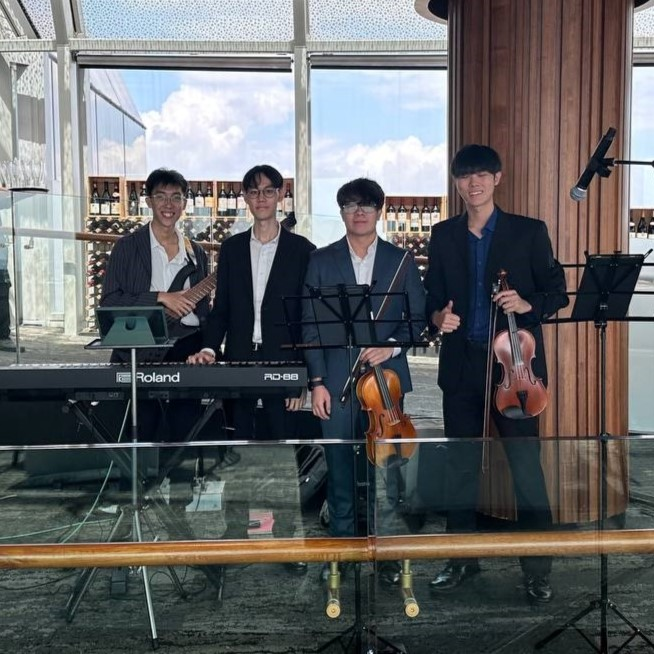
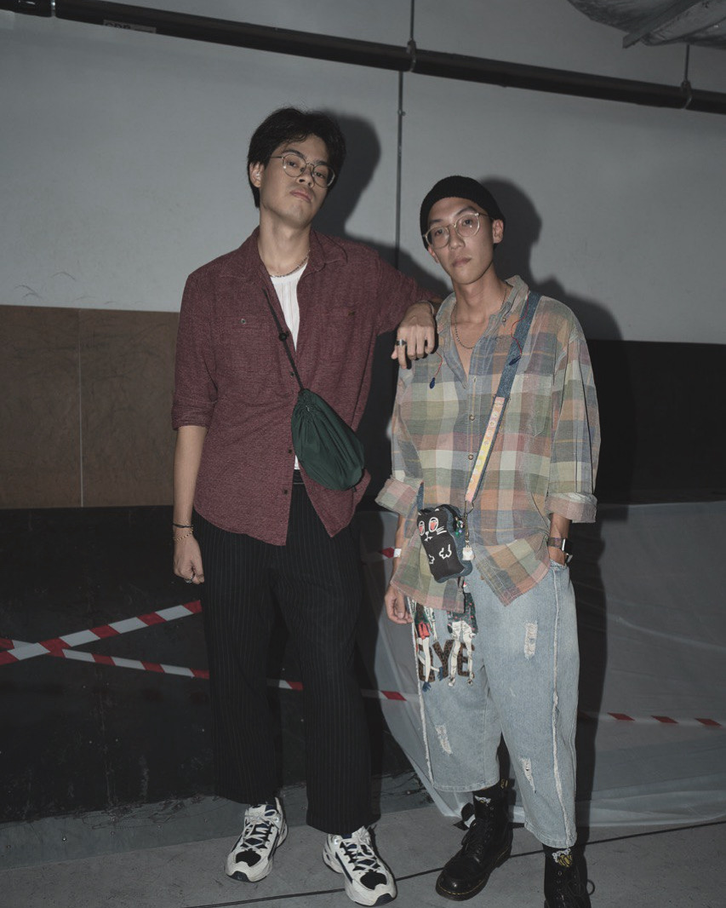

The Triatonics (2023)
A strings ensemble band that provides accompaniment and flourish to weddings, functions and celebrations. I support the band's design needs, creating name cards and logos, while playing the electric bass.
The band has also performed for Clementi CC's NDP60 Carnival and Punggol CC's Chrismtas Celebration.

Square Grass (2025)
An indie-pop duo that aims to provide music that resonates and speaks to the audience. As one half of the band, I support the band's adminstrative and social-media needs, in addition to song-writing. Currently pursuing a residency and our first EP!
The band has played alongside the Triatonics for Punggol CC's Christmas Celebration.